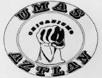
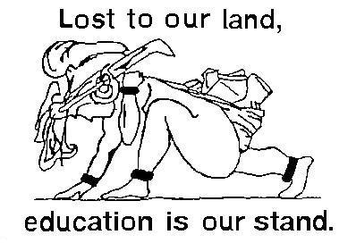

(UMAS)
Our Mission:
UMAS is dedicated to recruiting and retaining Chicano/Mexican/Mexican American students at CU and is dedicated to providing community service such as tutoring, CU tours, middle school and high school panels, and community events within disenfranchised communities.
UMAS also works to increase the cultural, social, political, and economic well being of the Chicano people. The club’s goals include encouraging respect, dignity, justice, and equality for Chicano people, furthering the educational development of local youth, advancing the empowerment and rights of all people, presenting Chicano culture to the campus and community, and encouraging Chicano, Latino, and Mexican-American graduates of institutions of higher learning to return to their communities and help better their people.
UMAS has a 35-year-old history as the first student organization to challenge and change the University's commitment to Chicano/Latino students and other students of color on campus.
You can find us in UMC Room 321 or call us at 303-492-6571
To contact us, email Jared Maestas at maestas99@hotmail.com or Rina Rojo at rina.rojo@colorado.edu
Our meetings are generally every two weeks on Wednesday starting around 6:30pm in Willard 101.